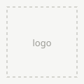

Computer Science Student in Berlin, Germany
Tristan Reimann
[PLACEHOLDER]
[PLACEHOLDER 2]
![Portrait of [Your Name]](assets/images/portrait-placeholder.svg)
Selected work
[Project title]
[One or two sentences: what it is and why it's interesting.]
[A third one]
[Short description.]
Experience

[Role or degree] · [Company / University]
[Optional one-liner about what you do/did there. Delete if not needed.]
[Previous role] · [Company]
[Optional description.]